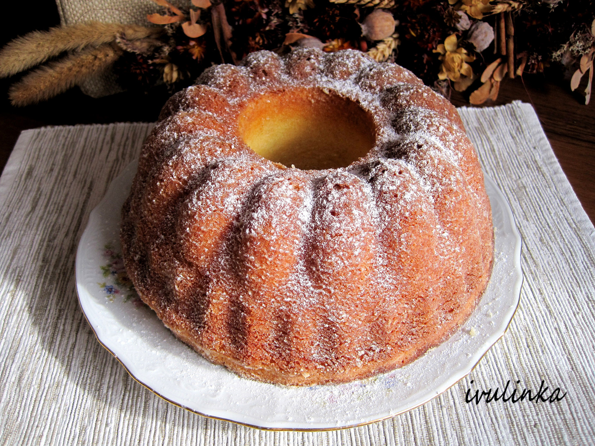

Babovka recipe

Here in the Czech Republic, a bábovka cake belongs to the most popular desserts made at weekends. Marble bundt cake means mramorová bábovka in Czech.
When I was little, my dad usually made the bábovka. He prepared this lovely swirl cake the same way as in this recipe: vanilla part of bábovka generously marbled with cocoa batter.
We were always curious about the two-color pattern inside the bábovka once we cut it open.
Ingredients
- greek yogurt
- all-purpose flour
- granulated sugar
- eggs
- baking powder
- vegetable oil
- cocoa powder
- milk
- vanilla extract
Easy Steps
-
Beat eggs and sugar in a mixing bowl for 5 minutes. Use a hand-held mixer set to the highest rotations.
-
Add vegetable oil, yogurt, vanilla, flour mixed with baking powder and continue mixing for another 2 minutes.
-
Mix a third of the batter with cocoa powder and a little milk.
-
Pour half of the white vanilla batter into the bundt cake pan, add cocoa batter, finish with the white batter layer.
-
Bake in a pre-heated oven for 50 minutes.
Once the bábovka cools down, you just dust it with powdered sugar.